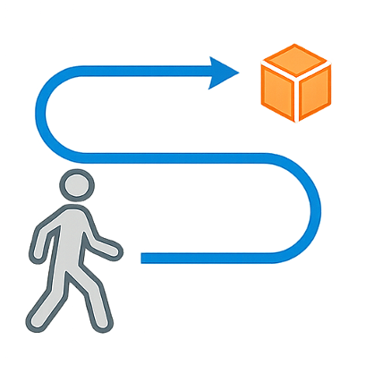
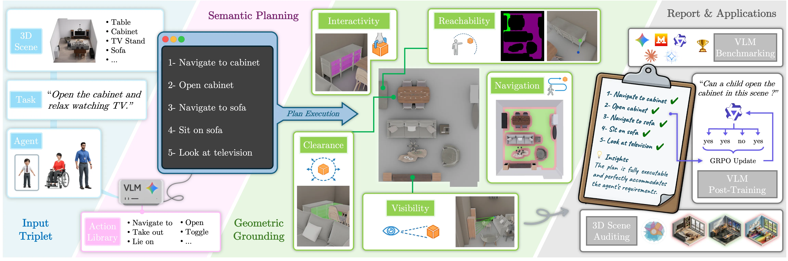
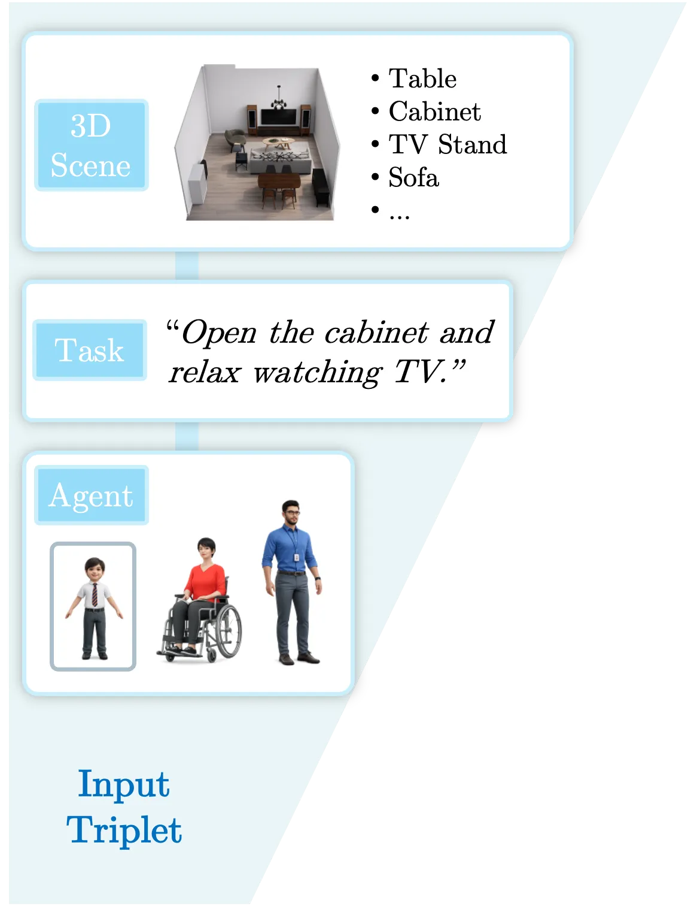
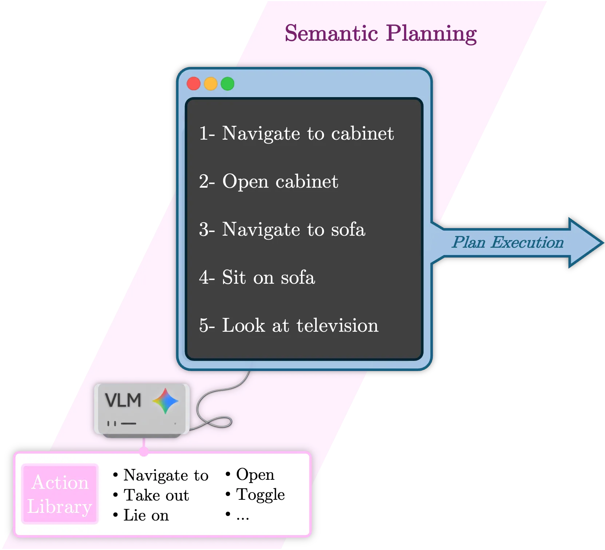
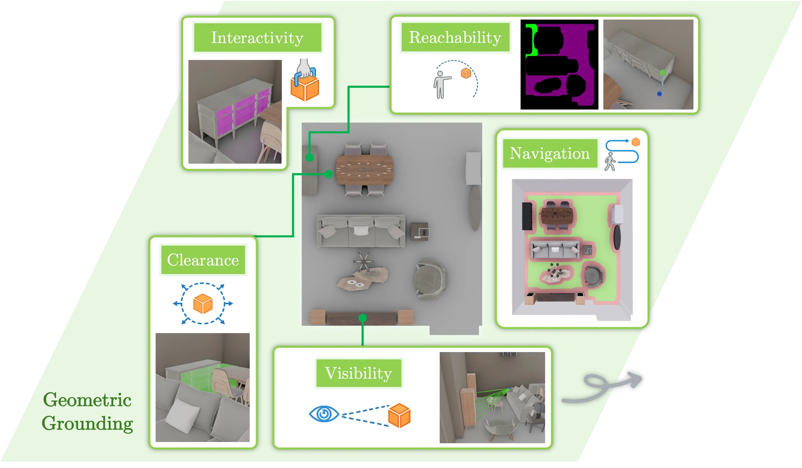
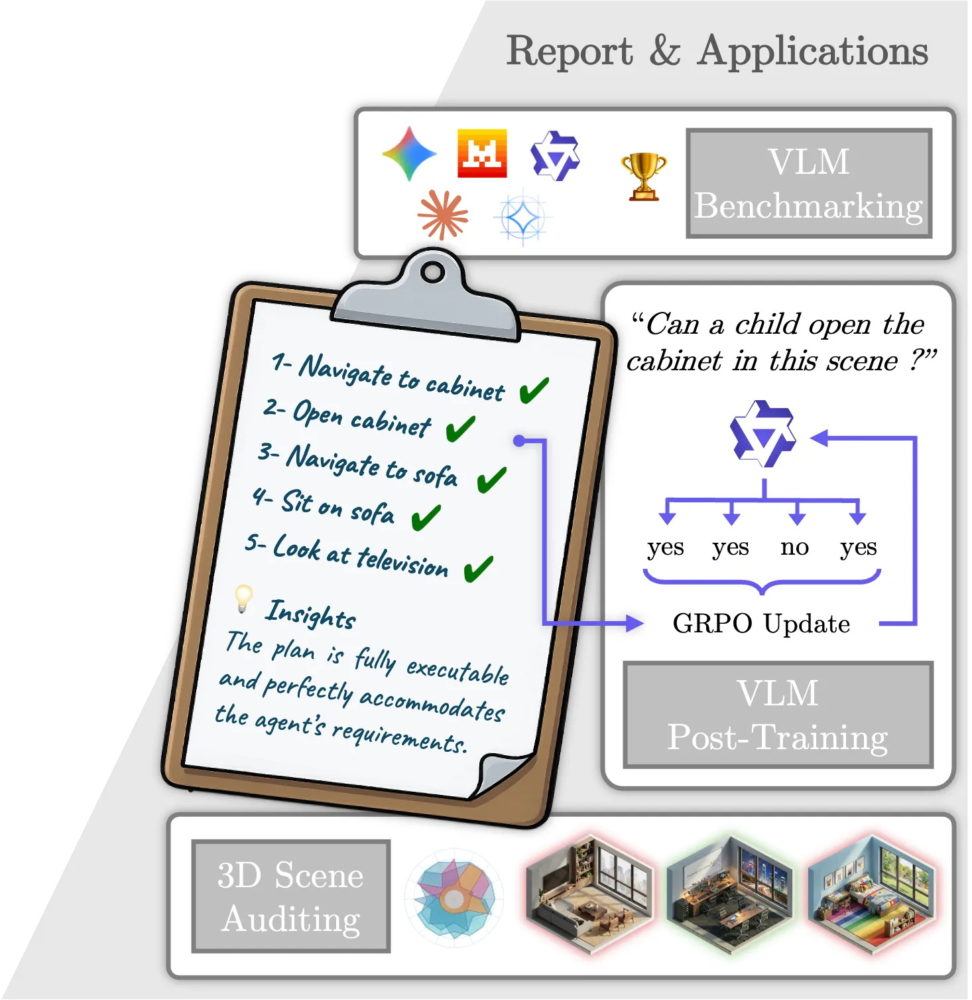
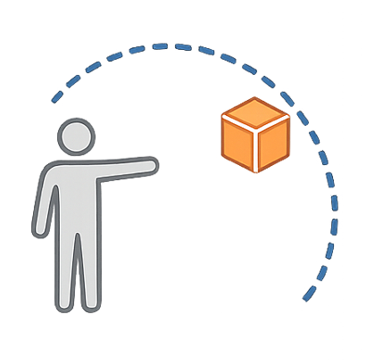
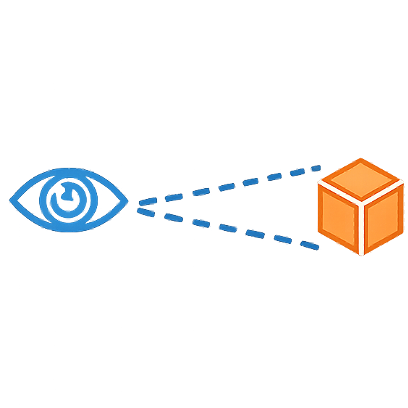

\(\mathcal{P}_{\text{nav}}\) :isNavigableTo
A score-based generative model for precise and controllable 3D indoor scene synthesis.
NeurIPS 2024An adapter for pretrained T2I models enabling layout-guided, 3D-aware image synthesis with camera and object-level control.
ICCV 2025




SceneTeract is a verification engine that, given a 3D scene, an embodied agent profile, and a target activity, decomposes the task into atomic actions and validates each step with explicit geometric and physical checks, producing finegrained and actionable feasibility diagnostics.
Affordance is not an intrinsic property of a scene, but a relational one. Along with the 3D scene representation and an activity description, SceneTeract takes as input an embodied Agent Profile encompassing distinct physical capabilities like mobility factors and reach distances.
Complex indoor activities can be decomposed into sequences of simple, atomic agent-object interactions. Leveraging the semantic reasoning capabilities of VLMs, we plan these activities using a fixed, closed-vocabulary library of atomic actions.
The success of any atomic action depends on satisfying a finite set of physical and spatial constraints. We verify these properties (e.g., navigation, reachability, clearance) using explicit 3D geometric tools, ensuring that agent-specific limitations are respected.
We apply SceneTeract as a single verification engine for scene auditing, VLM functional judgment benchmarking, and reinforcement-learning reward supervision, showing that its granular reports support both failure diagnosis and downstream model improvement.
Embodied AI depends on interactive 3D environments that support meaningful activities for diverse users, yet assessing their functional affordances remains a core challenge. We introduce SceneTeract, a framework that verifies 3D scene functionality under agent-specific constraints. Our core contribution is a grounded verification engine that couples high-level semantic reasoning with low-level geometric checks. SceneTeract decomposes complex activities into sequences of atomic actions and validates each step against accessibility requirements (e.g., reachability, clearance, and navigability) conditioned on an embodied agent profile, using explicit physical and geometric simulations. We deploy SceneTeract to perform an in-depth evaluation of (i) synthetic indoor environments, uncovering frequent functional failures that prevent basic interactions, and (ii) the ability of frontier Vision-Language Models (VLMs) to reason about and predict functional affordances, revealing systematic mismatches between semantic confidence and physical feasibility even for the strongest current models. Finally, we leverage SceneTeract as a reward engine for VLM post-training, enabling scalable distillation of geometric constraints into reasoning models. We release the SceneTeract verification suite and data to bridge perception and physical reality in embodied 3D scene understanding.
The verification context is defined as a scene-task-agent input triplet.
A VLM translates open-ended tasks into executable sequences.
Each atomic action is paired with a target scene object to form an interaction tuple \( (a, o) \). They are categorized into four functional families.
Mapping semantic actions to explicit physical, agent-aware verifications.
Based on their family membership, actions are mapped to a sequence of geometric checks that are validated against the 3D scene and the agent's physical constraints.
| Action Family | \( \mathcal{P}_{\text{nav}} \) | \( \mathcal{P}_{\text{reach}} \) | \( \mathcal{P}_{\text{inter}} \) | \( \mathcal{P}_{\text{clear}} \) | \( \mathcal{P}_{\text{vis}} \) |
|---|---|---|---|---|---|
| Mobility \( \mathbb{A}_{\text{m}} \) | 1 | — | — | — | — |
| Contact \( \mathbb{A}_{\text{c}} \) | 1 | 2 | — | — | — |
| Handling \( \mathbb{A}_{\text{h}} \) | 1 | 2 | 3 | 4 | — |
| Perception \( \mathbb{A}_{\text{p}} \) | — | — | — | — | 1 |
Select a geometric property column header to view its implementation details.

\(\mathcal{P}_{\text{reach}}\) :isReachable
Computes the minimum Euclidean distance from the agent's connected navigable floor region to the target mesh, vertically translated by \( h_{\text{arm}} \), and validated against the maximum reach radius \( r_{\text{arm}} \).
isInteractablehasClearanceVerifies if there is sufficient kinematic space in front of the target object to allow for articulation (e.g., door swing). A 3D interaction volume \(\mathcal{V}_{\text{clear}}\) is generated facing the interaction side and tested for collisions against the scene geometry.

\(\mathcal{P}_{\text{vis}}\) :isVisible
Determines if the target object is in the agent's line of sight, accounting for occlusion. \(\mathcal{P}_{\text{vis}}\) casts multiple rays from the agent's posture-adjusted eye position \( e_y \) to keypoints on the target's bounding box and computes a visibility ratio.
SceneTeract provides grounded, granular, and actionable insights about the validity of the plan.
The plan fails because the Child agent cannot open the
cabinet_1. Although the cabinet is physically reachable, its functional
handle is located at a distance of 0.52m, which physically exceeds the Child's maximum
reach limit of 0.40m.
Identify architectural failure modes preventing basic accessibility across different user profiles.
Quantify the gap between modern VLMs' semantic confidence and physical reasoning abilities.
Use binary checks as a scalable reward signal to distill geometry constraints into language models.
We deploy the SceneTeract verifier across three distinct applications to highlight the functional gaps in modern 3D synthetic scenes and VLMs, and demonstrate how geometric grounding can improve reasoning models.
We benchmark the readiness of modern 3D environments for embodied interaction by evaluating complex activities across 3,396 scene-task-agent configurations from the 3D-FRONT dataset. As shown below, synthetic environments exhibit broad functional feasibility gaps across the three user profiles, indicating that visually plausible arrangements often fail to support basic everyday actions, especially for mobility-constrained agents where restrictive spatial layouts act as a primary bottleneck.
| Metric | Adult | Child | Wheelchair User |
|---|---|---|---|
| Task Success | 59.0% | 66.0% | 42.5% |
| is_Navigable_To | 84.7% | 89.2% | 73.0% |
| is_Reachable | 91.9% | 93.7% | 80.7% |
| is_Interactable | 75.6% | 73.4% | 64.1% |
| is_Visible | 98.7% | 97.8% | 97.7% |
| has_Clearance | 67.3% | 66.3% | 66.6% |
We evaluate frontier and open-weight VLMs on their ability to correctly predict physical affordances. We compare native task evaluation (Direct) against our granular, step-by-step action-level verification (Decomposed). Click on any metric header below to see its detailed description.
Select a metric column header to view its exact definition and role.
Measures a model's spatial perception and judgment at the most granular, atomic level. It asks: can the model correctly determine if a single, isolated action (like opening a specific drawer) is feasible given the agent's profile?
Measures the capacity to evaluate complete, multi-step human activities. In the decomposed setting, task success is defined only if the model predicts all constituent actions in the sequence to be feasible.
Quantifies physical hallucinations: how frequently a model predicts an impossible task is possible. A lower FP rate indicates a model is better at recognizing geometric and physical bottlenecks (like obstructed paths or out-of-reach objects).
Because our dataset contain natural class imbalances, MCC provides a robust, unified measure of classification quality. A higher score signifies better overall discrimination.
The maximum difference in task accuracy across the three agent profiles (Adult, Child, and Wheelchair user). A lower InGap indicates a fairer model that successfully internalizes the unique physical constraints of specific, diverse embodiments.
Measures resilience to compounding task complexity. Defined as the ratio of task accuracy on long-horizon tasks (3+ action steps) versus short-horizon tasks (1–2 steps). A score closer to 100% indicates strong invariance to task length.
The percentage of tasks where a model's direct holistic prediction logically matches its decomposed step-by-step conclusion. This reveals a model's native capacity to break down complex activities internally without contradicting itself upon closer inspection.
| Model Configuration | Action | Task | Reliability | |||||
|---|---|---|---|---|---|---|---|---|
| Acc ↑ | Acc ↑ | FP ↓ | MCC ↑ | InGap ↓ | HSI ↑ | Cons. ↑ | ||
| Gemini-3-Flash-Preview | Direct | — | 62.1 | 35.7 | 0.144 | 16.5 | 79.2 | 58.5 |
| Decomposed | 77.1 | 69.9 | 12.0 | 0.390 | 7.5 | 94.7 | ||
| Gemini-3.1-Pro-Preview | Direct | — | 61.7 | 22.4 | 0.182 | 4.5 | 89.3 | 53.3 |
| Decomposed | 72.1 | 61.6 | 6.0 | 0.321 | 6.9 | 112.7 | ||
| Claude-Sonnet-4-6 | Direct | — | 62.8 | 21.9 | 0.208 | 12.8 | 97.9 | 81.4 |
| Decomposed | 73.1 | 62.3 | 20.6 | 0.201 | 19.4 | 100.4 | ||
| Qwen3-VL-8B-Instruct | Direct | — | 61.5 | 32.9 | 0.130 | 17.6 | 82.7 | 69.5 |
| Decomposed | 67.5 | 62.3 | 20.1 | 0.204 | 6.6 | 99.2 | ||
| Gemma3-12B-Instruct | Direct | — | 59.3 | 40.2 | -0.055 | 22.5 | 69.4 | 93.7 |
| Decomposed | 75.0 | 61.7 | 36.1 | 0.116 | 17.2 | 78.2 | ||
| Ministral3-3B-Instruct | Direct | — | 54.0 | 33.3 | -0.049 | 15.0 | 80.0 | 21.7 |
| Decomposed | 34.5 | 41.7 | 0.7 | 0.069 | 21.6 | 144.7 | ||
| Gemma3-4B-Instruct | Direct | — | 59.8 | 40.2 | 0.000 | 22.5 | 72.3 | 97.9 |
| Decomposed | 74.8 | 60.1 | 38.8 | 0.010 | 18.9 | 71.9 | ||
| Qwen3-VL-4B-Instruct | Direct | — | 60.8 | 32.6 | 0.111 | 20.3 | 87.3 | 64.6 |
| Decomposed | 70.4 | 61.4 | 22.8 | 0.172 | 13.2 | 97.6 | ||
| ↳ with GRPO (ours) | Direct | — | 61.5 | 32.9 | 0.130 | 17.2 | 83.8 | 62.3 |
| Decomposed | 75.3 | 69.2 | 14.1 | 0.364 | 9.7 | 98.2 | ||
Insight text goes here.
Supervised Fine-Tuning (SFT) for spatial reasoning is often prone to superficial alignment and catastrophic forgetting. Instead, we formulate spatial alignment as a reinforcement learning problem using Group Relative Policy Optimization (GRPO). By using SceneTeract's deterministic grounding engine as a scalable, automated reward signal, we can distill geometric constraints directly into the reasoning paths of a Vision-Language Model.
For a given atomic action step, the VLM is prompted to sample a group of \( G \) independent Chain-of-Thought (CoT) reasoning paths, each concluding with a predicted action feasibility judgment \( \hat{v}_i \). SceneTeract assigns a sparse reward to each completion by directly comparing it against the grounded verifier label \( v \):
The model policy is then updated by maximizing the group-relative advantage:
where \( \mu_r \) and \( \sigma_r \) are the mean and standard deviation of the rewards within the sampled group.
By contrasting successful reasoning paths against failed ones for the exact same query, the model internalizes true notions of 3D functional awareness instead of superficially memorizing spatial layouts.
@article{maillard2026sceneteract,
title={SceneTeract: Agentic Functional Affordances and VLM Grounding in 3D Scenes},
author={Maillard, L{\'e}opold and Engelmann, Francis and Durand, Tom and Pan, Boxiao and You, Yang and Litany, Or and Guibas, Leonidas and Ovsjanikov, Maks},
year={2026},
url={https://sceneteract.github.io}
}